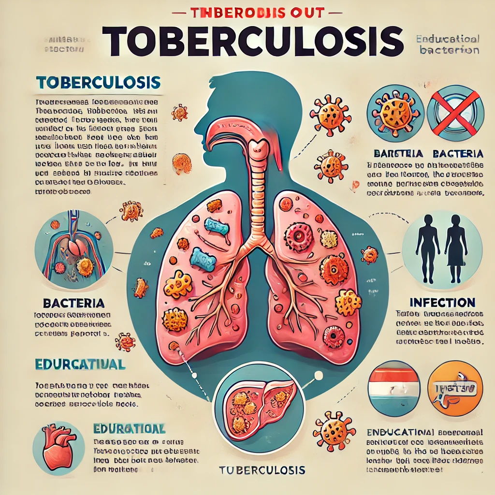
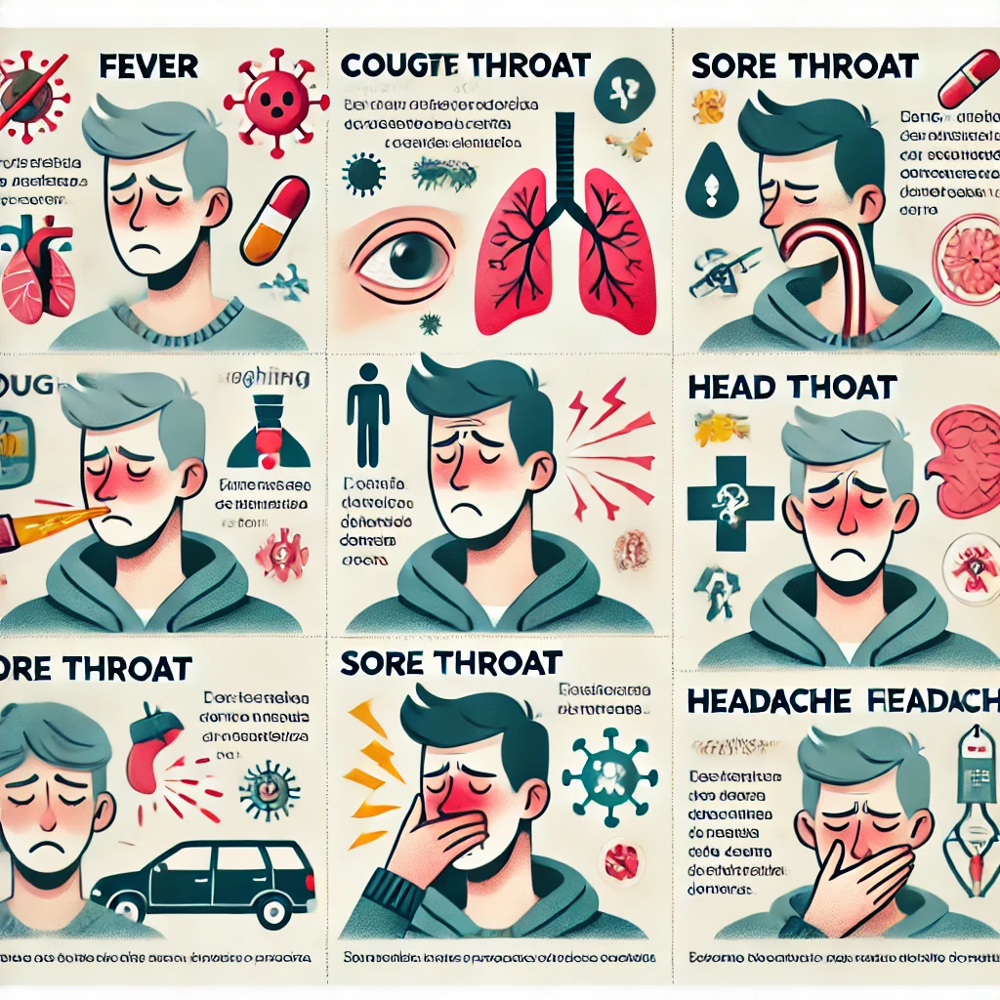
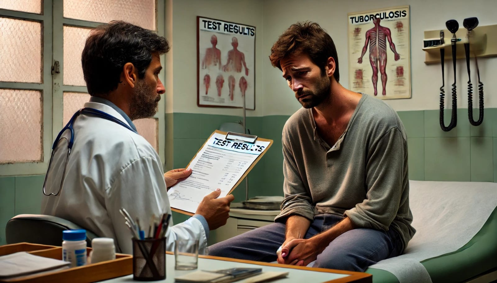

Era uma vez um jovem chamado Paulo, que vivia em um bairro agitado. Nos últimos dias, ele começou a perceber algo estranho: uma tosse persistente, febre constante e uma perda de peso inexplicável. Enquanto tentava ignorar os sintomas, sua amiga Ana, preocupada, decidiu falar com ele.
Paulo, eu estou realmente preocupada com você. Sabia que esses sintomas podem ser sinais de uma doença chamada tuberculose? Vou te fazer algumas perguntas sobre ela, e aí a gente vê o quanto você já sabe, tá bom? É rapidinho! Paulo: "Ah, sério, Ana? Tá bom, manda ver"
Quiz sobre Tuberculose
Ana: "Paulo, vamos começar do início: O que é tuberculose?"
a) Uma doença causada por vírus
b) Uma infecção bacteriana que afeta principalmente os pulmões
c) Uma condição genética transmitida de pais para filhos

Ana: "Próxima pergunta: Como a tuberculose é transmitida?"
a) Por contato com a pele
b) Pelo ar, através da tosse ou espirro
c) Pelo consumo de água contaminada
Ana: "Muito bem! Próxima pergunta: Quais são os principais sintomas da tuberculose?"
a) Dor de cabeça e tontura
b) Tosse persistente, febre e perda de peso
c) Dor muscular e coceira

Ana: "E se a gente encontrar alguém com tuberculose, o que devemos fazer?"
a) Isolar totalmente a pessoa
b) Ajudar a pessoa a procurar tratamento e tomar os cuidados indicados
c) Evitar o contato para sempre
Ana: "Vamos continuar, Paulo. Próxima pergunta: Qual é o exame mais comum para detectar a tuberculose?"
a) Exame de sangue
b) Teste de escarro
c) Ultrassonografia
Ana: "E como é o tratamento para tuberculose?"
a) Uso de antibióticos por pelo menos 6 meses
b) Repouso absoluto por 3 semanas
c) Tratamento com analgésicos
Ana: "Isso mesmo! Agora, Paulo, você sabe qual é uma medida eficaz para prevenir a tuberculose?"
a) Vacinação com a vacina BCG
b) Beber água potável
c) Uso de repelentes
Parabéns, Paulo! Você aprendeu muito sobre tuberculose!
Paulo e Ana vão ao posto de saúde. Ao chegarem, a médica parece ocupada e, quando Paulo explica seus sintomas, ela diz:
Médica: "Volte para casa e tome um antitérmico. É só uma virose."
Paulo, frustrado, sai sem entender a gravidade da situação.
Paulo: (saindo do consultório, com expressão frustrada) "Eu não consigo acreditar que a médica me mandou voltar pra casa e tomar antitérmico. Só uma virose? Sinto que algo está muito errado!"
Ana: "Eu também achei estranho. Você estava tão mal, e ela nem fez mais perguntas. É frustrante."
Paulo: "Parece que ninguém leva a sério os sintomas. Eu só queria entender o que está acontecendo comigo."
Ana: "Você sabe, Paulo, a tuberculose é vista de forma muito preconceituosa em muitos lugares. Algumas pessoas ainda associam a doença à pobreza e a condições de vida insalubres."
Paulo: "É verdade. Fiquei pensando se a médica não achou que eu sou só mais um caso qualquer..."
Ana: "Sim, e isso pode afetar o tratamento. Muitas pessoas que precisam de ajuda não buscam atendimento porque têm medo do estigma. Isso é muito comum, principalmente entre populações negras e marginalizadas."
Paulo: "Isso é muito injusto. As pessoas deveriam ser tratadas com dignidade, independentemente de sua condição de vida."
Ana: "Exatamente! E o que é mais preocupante é que, mesmo com tratamento gratuito disponível, o preconceito e a falta de informação ainda dificultam o acesso ao diagnóstico e ao tratamento adequado."
Paulo: "Eu só quero saber se estou realmente doente. Não posso simplesmente ignorar isso."
Ana: "Você está certo. Talvez devêssemos procurar outra opinião. É importante que você se sinta ouvido e compreendido. Vamos tentar encontrar um lugar onde as pessoas estejam mais dispostas a ajudar."
Paulo: "Sim, precisamos fazer isso. Não vou deixar que o estigma me impeça de buscar o que realmente preciso."
1. Falta de Investimento em Saúde Pública
Os dias se passam e, em vez de melhorar, Paulo piora. A tosse se torna mais intensa e ele sente falta de ar. Decidido a buscar ajuda novamente, ele retorna ao posto de saúde.
Paulo: [entrando no posto de saúde] "Olá, eu voltei. Minha tosse piorou e estou tendo muita dificuldade para respirar."
Atendente: "Oi, Paulo! Sinto muito em ouvir isso. Você já tinha vindo aqui antes, certo? Vamos fazer o seu cadastro novamente e encaminhar você para o médico."
Paulo: "Sim, vim aqui algumas semanas atrás. Eu achei que ia melhorar, mas não consigo mais dormir direito e a tosse está insuportável."
Atendente: "Entendo. É importante que você seja avaliado. Vou marcar você para uma consulta agora. Você já realizou algum exame recentemente?"
Paulo: "Não, ainda não fiz nenhum exame. Eu só tomei algumas medicações que me receitaram da última vez."
Atendente: "Certo, então hoje faremos exames para entender melhor o que está acontecendo. Por favor, aguarde um momento enquanto eu chamo o médico."
[Alguns minutos depois, o médico entra na sala]
Médico: "Olá, Paulo! O que está acontecendo? Como você está se sentindo?"
Paulo: "Olá, doutor. Eu estou me sentindo muito mal. A tosse está mais intensa e sinto que não consigo respirar direito. Estou preocupado."
Médico: "Entendo sua preocupação. Vamos realizar alguns exames para verificar a sua condição e ver o que está causando esses sintomas. Você está disposto a fazer isso?"
Paulo: "Sim, claro. O que preciso fazer?"
Médico: "Primeiro, vou te encaminhar para uma radiografia do tórax e alguns exames de sangue. Assim que tivermos os resultados, poderemos discutir o tratamento adequado."
Paulo: "Obrigado, doutor. Estou ansioso para descobrir o que está acontecendo."
Paulo: "Obrigado, doutor. Estou muito preocupado. O que posso fazer enquanto isso?"
Médico: "É importante que você não se preocupe excessivamente e tente descansar. Vamos descobrir o que está acontecendo o mais rápido possível."
Paulo: "Ok, Doutor."
Como a Tuberculose é Tratada
[Após alguns dias, os resultados chegam. O médico informa que Paulo está com tuberculose.]
[No consultório médico, Paulo aguarda ansiosamente os resultados. O médico entra, com uma expressão séria.].

Médico:
Olá, Paulo. Eu tenho os resultados dos seus exames.
Paulo:
E então, doutor? O que eles mostraram? Estou preocupado.
Médico:
Infelizmente, a análise revelou que você está com tuberculose.
Paulo:
[com a voz trêmula] Tuberculose? O que eu vou fazer agora?
Médico:
Sim, Sim, como você já sabe, A tuberculose (TB) é uma doença infecciosa causada pela bactéria Mycobacterium tuberculosis e é considerada uma das doenças negligenciadas que afetam desproporcionalmente populações vulneráveis, como pessoas negras em diversas partes do mundo, é uma condição séria, mas é tratável. Precisaremos começar o tratamento imediatamente.
Paulo:
[desapontado] Mas... por que isso aconteceu comigo? como adqueri?.
Médico:
A transmissão da tuberculose ocorre principalmente pelo ar, através de gotículas expelidas pela tosse, espirros ou fala de uma pessoa infectada. Pessoas em condições de superlotação, com acesso limitado à ventilação adequada e em ambientes onde é difícil manter cuidados de higiene, são mais suscetíveis à infecção. Essas condições são comuns em comunidades de baixa renda, onde muitas pessoas negras vivem, devido a desigualdades históricas e estruturais.
Paulo:
Eu só queria ser ouvido e tratado com respeito. Não sou apenas um número ou mais um caso na estatística.
Médico:
Você está certo. Apesar da disponibilidade de tratamento gratuito em muitos lugares, o estigma em torno da tuberculose e a falta de conhecimento sobre a doença ainda dificultam o acesso ao diagnóstico e tratamento. Em muitos sistemas de saúde, há uma visão preconceituosa sobre a tuberculose, que tende a associá-la à pobreza e a condições de vida insalubres. Isso afeta negativamente o atendimento, principalmente entre populações negras e marginalizadas, que podem ser tratadas com menor prioridade ou sofrer preconceito por parte de profissionais de saúde.
Cada paciente é único e merece atenção e dignidade. Vou garantir que você receba o suporte necessário durante o tratamento. Temos equipes de apoio que podem ajudar você a entender mais sobre a doença e a lidar com o estigma.
Paulo:
Isso é um alívio, mas ainda me sinto tão perdido. E se as pessoas souberem? O que vão pensar de mim?
Médico:
A percepção das pessoas pode ser cruel, mas lembre-se de que você não está sozinho. A tuberculose é uma doença que afeta muitas pessoas. O importante agora é focar na sua recuperação e no tratamento adequado.
Paulo:
Espero que isso possa me ajudar. Não quero que essa doença defina quem eu sou.
Médico:
Isso mesmo, Paulo. A tuberculose pode ser tratada, e você pode levar uma vida saudável novamente. Vamos trabalhar juntos para garantir que isso aconteça.
Resistência a Medicamentos
Paulo tenta se manter positivo, mas a discriminação o abala. Ao ir buscar o tratamento, ele é tratado como um pária.
Com isso, Paulo sente-se desamparado e começa a resistir ao tratamento.
A tuberculose é uma batalha que pode ser vencida com cuidado, conhecimento e compaixão. Vamos juntos combater o estigma e promover a saúde para todos!
Paulo:
(aproximando-se da mesa, visivelmente abatido) "Olá, eu vim buscar meu medicamento."
Profissional de saúde:
(sem olhar nos olhos) "Aqui está. Pegue seu medicamento e vá. E, por favor, fique longe das outras pessoas para evitar contágio."
Paulo:
(sente um frio na barriga) "Espere um momento. Você não acha que isso é um pouco... duro? Estou tentando me cuidar, e você me trata como se eu fosse um pária."
Profissional de saúde:
"Não é pessoal, Paulo. É apenas uma precaução. A tuberculose é contagiosa, e precisamos proteger os outros."
Paulo:
"Mas eu sou uma pessoa, não um número. Estou aqui buscando ajuda, e isso me faz sentir pior. Não quero mais pegar esse medicamento."
Profissional de saúde:
"Olha, eu entendo que seja difícil, mas você precisa continuar o tratamento. É para a sua saúde e a saúde dos outros."
Paulo:
"A saúde? Como posso me sentir saudável quando me tratam como se eu fosse uma ameaça? Esse estigma só faz com que eu queira resistir ao tratamento."
Profissional de saúde:
(com um tom mais suave) "Eu compreendo sua frustração. Mas resistir ao tratamento só vai piorar a situação. Precisamos de você saudável e ativo, não apenas para você, mas para todos ao seu redor."
Paulo:
"É fácil para você dizer. Você não está passando por isso. O que acontece se eu não tomar o medicamento? Não parece haver diferença. Eu só me sinto mais isolado."
Profissional de saúde:
"Se você não tomar o medicamento, a tuberculose pode se agravar e se tornar mais difícil de tratar. Eu não quero que você passe por isso. Dê uma chance ao tratamento."
Paulo:
(hesitante) "Talvez... talvez eu tente, mas preciso de um apoio melhor. Eu não posso fazer isso sozinho."
Profissional de saúde:
"Você tem razão. Vou anotar isso e pedir que um profissional de saúde mental entre em contato com você. É importante que você se sinta apoiado."
Paulo:
(suspiros) "Ok, vou tentar novamente. Mas preciso que me vejam como uma pessoa, não como um pária."
Conclusão
A jornada de Paulo contra a tuberculose revela a complexidade e os desafios enfrentados por muitos ao lidarem com essa doença. Desde a identificação dos sintomas até o tratamento, Paulo enfrenta não apenas as consequências físicas da tuberculose, mas também o estigma social e a discriminação associada à doença. Essa narrativa destaca a importância de uma abordagem empática e informada no atendimento à saúde, onde cada paciente é tratado com dignidade e respeito, independentemente de sua condição socioeconômica. O suporte psicológico e a conscientização sobre a tuberculose são essenciais para garantir que indivíduos como Paulo não apenas recebam o tratamento adequado, mas também se sintam valorizados e apoiados em sua recuperação. A luta de Paulo nos lembra que, além da medicina, a compaixão e a compreensão são fundamentais na luta contra doenças negligenciadas e na promoção da saúde pública.